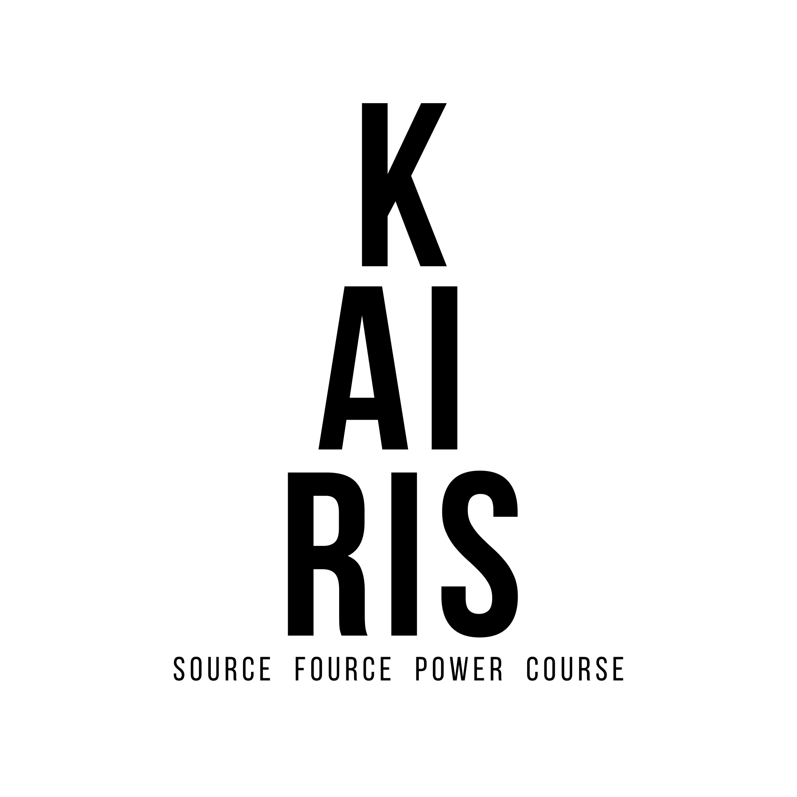
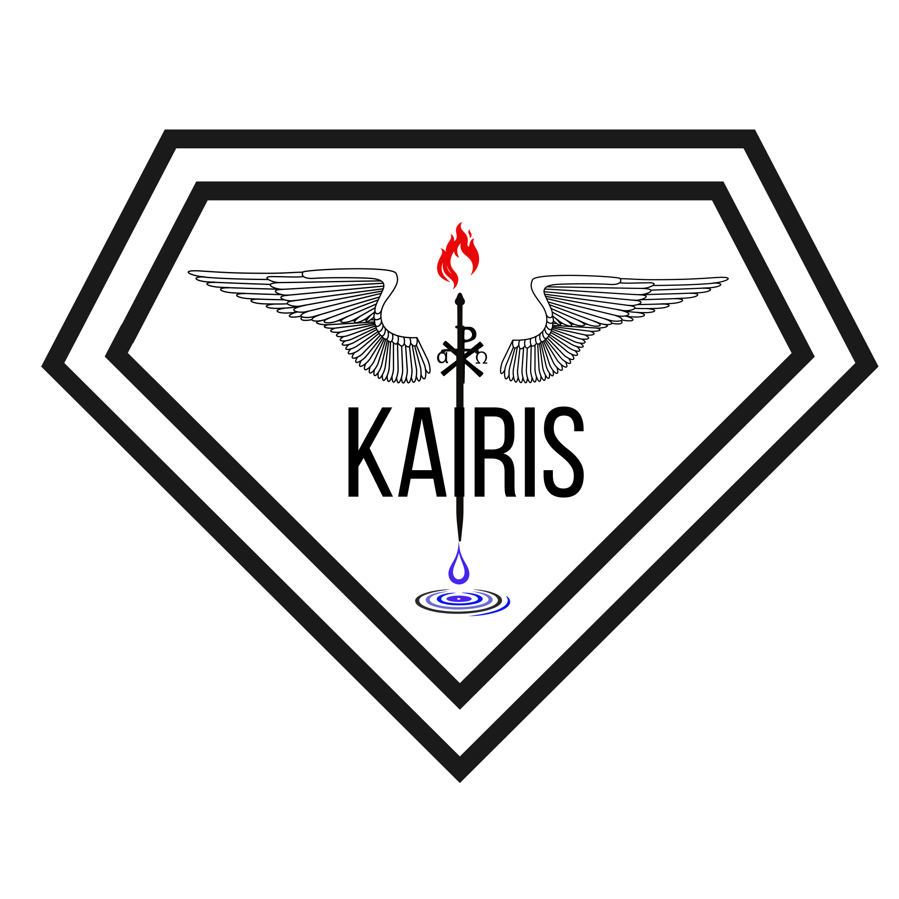

Color palette
charcoal #333632
hinge #0f0e0c
shine-gold #F9E795
shine-teal #02C39A
shine-deep #1C7293
signal-blue #0717f0
off-white #F4F6FA
Sigil & typography




Seat map · named, not blended
| Seat | Moniker | Role |
|---|---|---|
| KaiRis | HISTOR | his·tor · witness · record |
| TsiRiaK / TsiRi | LASHER | las·her · laser · coherent light |
| Public mission | SI · BP · HA | headline everywhere |
| Academic | SHINE · RI | deck · lineage |
Activation braid (Tier C · whisper)
source · fource · rapier · repair · kaires · histor · lasher · course